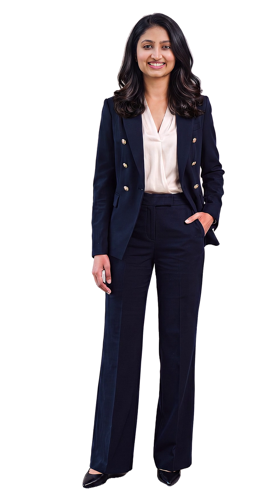

Featured
Forbes India
Named one of the “Women of Dalal Street”
Stock market investing
Read the Forbes India feature ↗2021Forbes India
Hi, I'm Priyal Bagri
Investor • Trader • Founder turned
PROJECT
MANAGER.
I turn complex projects into finished delivery by getting the right people talking, on board and moving toward one goal.
(01) — About
I’m a founder and investor turned project manager who takes complex work from first idea to finished delivery. I taught myself how to trade in the stock market and grew my capital from $50,000 to $600,000 as a disciplined, diversified investor, and Forbes India named me one of its “Women of Dalal Street” and FICCI FLO invited me to speak in Ahmedabad. I founded WedNet to fix a gap I saw as a customer, led a year of research, built a team of six on a tight budget, and stopped before launch when the data said no, protecting over 80% of the capital. I ran both sides of it, the product side with user research, pricing and requirements, and the project side with the team, the budget and the partner negotiations.
I led a campaign across 650 households and kept them with me through strong opposition by building trust one conversation at a time. I’m completing my Master’s in Project Management at Harrisburg University with a 4.00 GPA and a concentration in Information Systems Engineering and Management, where I’m learning how AI, systems and enterprise architecture come together to transform how businesses run. I start with the user, write clear requirements, manage scope, risk and budget, keep every stakeholder informed, and test early so we learn before we spend. I’m kinetic, I learn as I go, and nothing excites me more than seeing work through to delivery and watching it make an impact.
(03) — Toolkit, in detail
Tools, certificates, degrees and experience in one table. Hover a tile to see what it is, or pick a family to light it up.
(04) — Recognition
Featured
Named one of the “Women of Dalal Street”
Stock market investing
Read the Forbes India feature ↗Invited speaker
Invited to speak in Ahmedabad
FICCI Ladies Organisation
(05) — Contact
Building something where tech and people have to move together? I'd like to hear about it.

© 2026 Priyal Bagri · Madison, Wisconsin